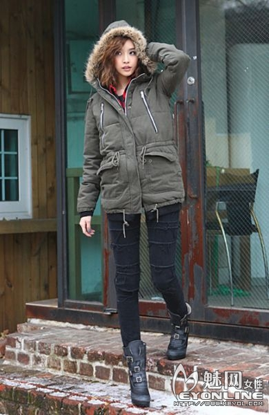

导读：除了甜美的短裙、苗条的打底裤，冬日MM们最爱选择之一还有牛仔裤了，无论是修身的紧身小脚裤，还是帅气的男友式牛仔裤，无论是明快的蓝色调，还是干练百搭的黑色，用心搭配，就能创造出独属于自己的时尚达人风范。

牛仔裤故意的破坏和撕裂效果显得格外抢眼与个性
百搭而经典的黑色牛仔裤故意的破坏和撕裂效果显得格外抢眼与个性，具有浓浓街头气息，搭配上都市摩登感高帮短靴，帅酷而时髦。
黑色的故意破坏效果处理令牛仔裤显得很独特
黑色的故意破坏效果处理令黑色牛仔裤显得很独特，同时又十分百搭，无论是深冬严寒季节，还是搭配上衬衫在温暖时候穿着都非常不错。
多种单品重复混搭惹眼极了
想要更加时髦的达人风范，不妨试着将多种单品重复混搭，t恤、衬衫、军装大衣搭配上流苏挎包、牛仔裤、皮草袜套，简直惹眼极了。

流行又时尚的黑色雪花点牛仔裤无限发挥你的魅力
流行又时尚的黑色雪花点牛仔裤是很多MM的心头大爱，帅酷时髦的色彩、个性独特的水洗效果，再加上能够凸显纤细腰身的高腰式设计，无限挥发你的魅力风采！
略微宽松的牛仔裤穿着更为舒适与自在
相比较时下满天分的紧身小脚裤，像这样的略微宽松的牛仔裤穿着更为舒适与自在，冬天套上保暖打底裤也一样适合穿着，百搭又实穿。
灰黑色牛仔裤与工装大衣搭配出休闲和随意的气息
稍显宽松的灰黑色牛仔裤与厚实又保暖的工装大衣搭配出休闲和随意的气息，运动鞋更是很多MM出街舒适首选单品，而桃红色的手提包包则很好点亮造型的色彩与亮点，活泼又艳丽！
帅气的爆潮男友式牛仔裤时尚MM不可错过
宽松而又帅气的爆潮男友式牛仔裤同样是时尚MM们不可错过的~独特的水系效果加上深蓝色调十分适合冬季穿着，另外翻边穿着露出裤脚折叠式牛仔裤内里独特设计的印花也是时下很流行的！

-
站内搜索
-

-
文章分类
to "冬季牛仔裤搭出时尚潮人风范"